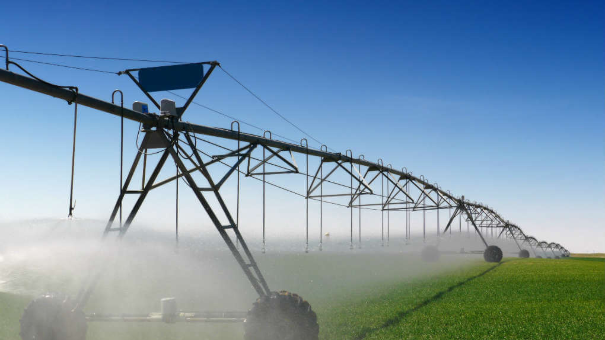

Otimizando a Produção Agrícola
Com inovação, tecnologia e sustentabilidade para um futuro mais verde.
Ver ProjetosSobre Mim

Me chamo Marcos Renan, trabalho como Engenheiro Agrônomo há 5 anos, minha paixão pela Agronomia é impulsionada pela conexão entre a ciência, a terra e o nosso sustento. Acredito que a agricultura moderna, quando praticada com inteligência e responsabilidade, não é apenas um negócio, mas a base para um futuro mais próspero e sustentável.
Portfólio de Projetos

Otimização de Irrigação em Soja
Aumento da eficiência hídrica e produtividade através de agricultura de precisão.
Saiba Mais
Manejo Integrado de Pragas
Redução do uso de defensivos e otimização de custos com controle biológico.
Saiba MaisMeus Serviços
- Consultoria em manejo de culturas
- Planejamento e análise de solo
- Implementação de agricultura de precisão
- Avaliação de propriedades rurais
Contato
Pronto para otimizar sua produção? Entre em contato!